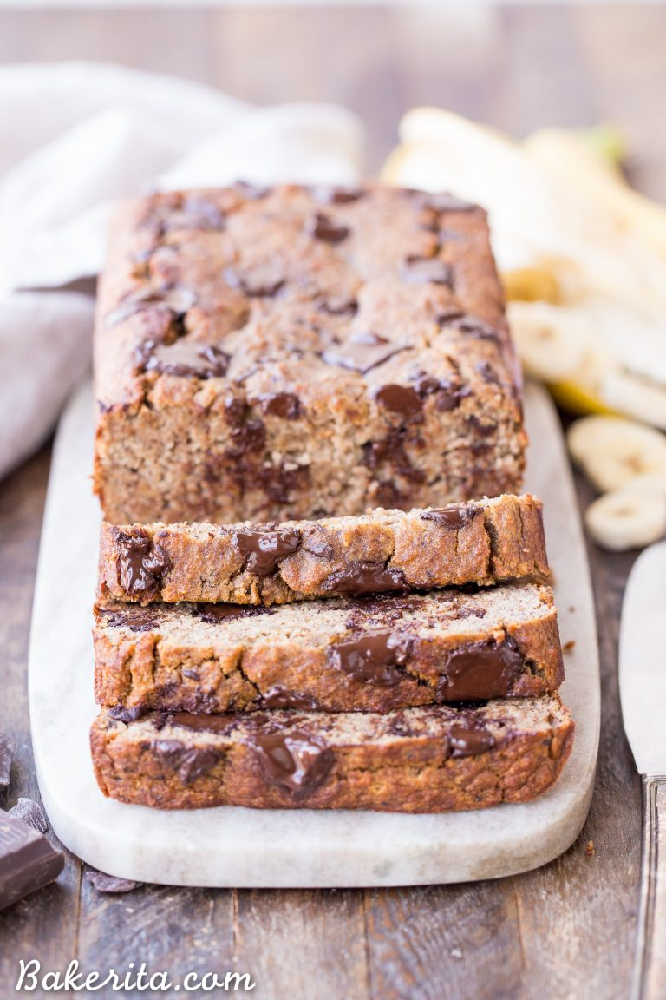

Chocolate Chunk Banana Bread
This Paleo Chocolate Chunk Banana Bread is sweetened only with bananas for a guiltless treat that tastes just like traditional banana bread! This is easy recipe you’ll come back to again and again. This paleo banana bread is also gluten-free, grain free, and sugar-free.
INGREDIENTS
- 4 bananas (2 1/2 cups mashed or 575 grams)
- 4 eggs
- 1/2 cup (140 grams) almond butter (or any nut butter of your choice)
- 4 tablespoons coconut oil (melted)
- 1/2 cup (75 grams) coconut flour
- 1/2 teaspoon cinnamon
- 1 teaspoon baking soda
- 1 teaspoon baking powder
- 1 teaspoon vanilla extract
- pinch of sea salt
- 6 oz. dark chocolate (chopped (see Notes for recommendation to keep 100% Paleo))
DIRECTIONS
- Grease one 9″x5″ loaf pan (or 8″x8″ square pan, which is what I used) and preheat the oven to 350ºF.
- In a large bowl or mixer, combine the mashed bananas, eggs, coconut oil, vanilla extract and nut butter until fully combined.
- Add the coconut flour, cinnamon, baking soda, baking powder, and sea salt to the wet ingredients and mix well. Fold in the chocolate chunks.
- Pour the batter into the prepared pan and spread it evenly.
- Bake in the preheated oven for about 40 minutes if using a square pan, and 50-60 if using a loaf pan. A toothpick inserted into the center should come out clean, and when you press down lightly on the loaf, it should spring back, not stay indented. If a toothpick comes out clean but the loaf isn’t springing back, keep it in the oven until it does to ensure it’s baked through.
- Remove from oven and allow to cool on a wire rack for about 1/2 hour. Flip out onto a cooling rack to finish cooling.